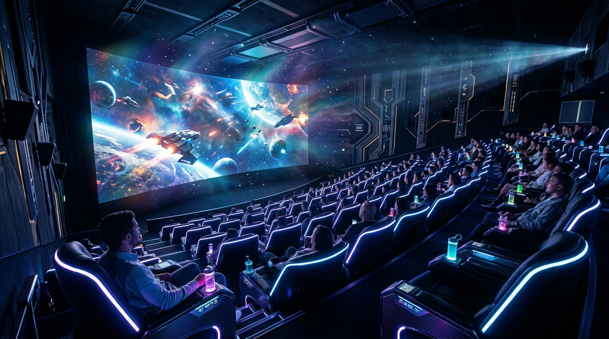
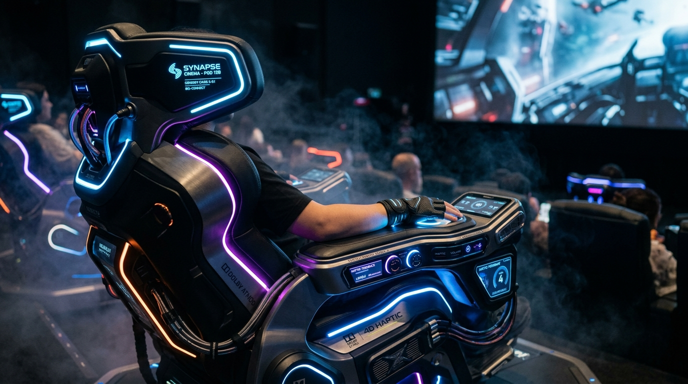
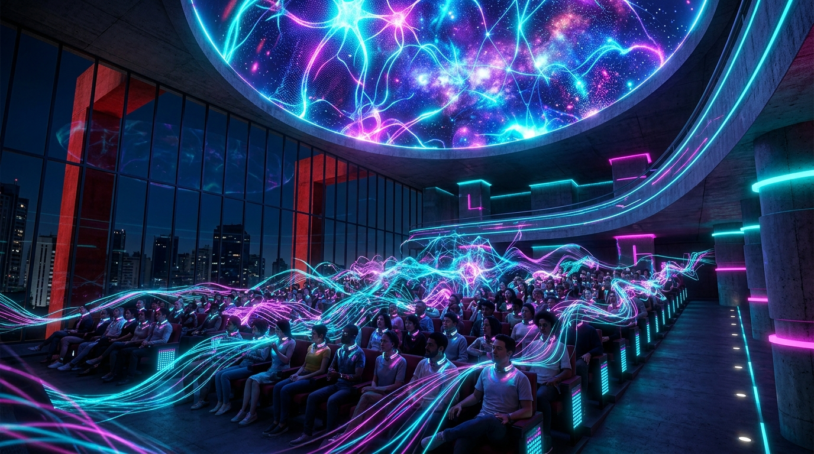

O FUTURO DO CINEMA
NÃO CABE EM CASA.
Redefinindo a sétima arte através da imersão sensorial absoluta, inteligência artificial generativa em tempo real e experiências físicas coletivas impossíveis de replicar na sua sala de estar.
Uma Nova Era Cinematográfica Forjada Pela Tecnologia
Inspirado nas maiores convenções globais de inovação e entretenimento interativo, a Real Sensation surge para responder à pergunta definitiva: o que faz o cinema valer a pena quando as telas domésticas se tornaram gigantes?

A Sétima Arte Reconstruída do Zero
O streaming e as TVs de alta resolução acomodaram o público no sofá. A Real Sensation quebra essa barreira com uma infraestrutura arquitetônica impossível de reproduzir em ambientes domésticos. É a convergência máxima entre tecnologia de games de última geração, neurociência auditiva e efeitos de teatro físico.
- Telas volumétricas curvas de campo visual periférico expandido
- Sincronização neural coletiva com a audiência
- Atmosfera climática e pulsos táteis milimétricos

Cápsulas Sensoriais Hápticas
Cada espectador ocupa uma estação biométrica sensorial autônoma dotada de transdutores subgraves que transmitem impacto cinematográfico direto na estrutura óssea e muscular, em harmonia com sintetizadores de aromas e rajadas microclimáticas sincronizadas à narrativa.
- Feedback tátil de alta fidelidade com resposta tátil a cada batimento
- Controle dinâmico individual de intensidade e acessibilidade
- Química olfativa digitalizada sem resíduos ou desconforto

IA Generativa e Emoção Coletiva
Pela primeira vez no mundo, motores de inteligência artificial monitoram a respiração e a tensão da sala para modular sutilmente frequências sonoras, iluminação periférica e ramificações sensoriais da cena. Cada sessão no MASP será irrepetível e singular.
- Redes neurais adaptativas que reagem à pulsação do público
- Áudio adaptativo posicional 3D sem perda de diálogo
- Experiência verdadeiramente social e compartilhada
Os 4 Pilares da Experiência Real Sensation
Uma sinestesia calculada milissegundo a milissegundo para despertar sentidos adormecidos.
Óptica Quântica Periférica
Campo de visão de 220 graus que abraça completamente a retina humana. Elimina os limites da moldura da tela tradicional e transporta sua consciência para dentro da narrativa visual.
Neuroacústica Espacial Holística
Mais de 128 canais sonoros independentes com calibração psicoacústica. Sinta a trajetória de cada sussurro, onda de choque ou acorde passando através de cada centímetro da plateia.
Sintetizador Atmosférico & 4D
Microclima térmico instantâneo, névoa criogênica e difusão de fragrâncias orgânicas projetadas por perfumistas para associar emoções cinematográficas à memória sensorial profunda.
Sinergia Coletiva Presencial
O cinema como ritual social sagrado. O arrepio comunitário, o suspiro sincronizado de centenas de pessoas reunidas no MASP vivendo um momento que não pode ser pausado ou experimentado isoladamente.
A Ciência da Imersão Sensorial
Confira abaixo a demonstração de como a engenharia multi-sensorial, assentos dinâmicos e atmosferas físicas transformam espectadores passivos em participantes vivos da ação cinematográfica.
Amostra Tecnológica: 1 e 2 de Novembro de 2026
Dois dias intensos de exibições imersivas, testes ao vivo das cápsulas sensoriais e masterclasses com engenheiros de efeitos.
O Nascimento do Cinema Sensorial
Apresentação inaugural com os idealizadores da Real Sensation e demonstração do protótipo acústico e óptico no Auditório Principal do MASP.
Sessões de Teste: Cápsulas Hápticas 4D
O público experimenta cenas curtas de ação, ficção científica e natureza com acionamento pleno de vento, choques táteis e aromas sincronizados.
IA Generativa em Tempo Real na Narrativa
Mesa redonda com diretores de cinema, programadores de games AAA e neurocientistas sobre o futuro da imersão cinematográfica coletiva.
Cine-Concerto "Synesthesia 2026"
Exibição especial combinando música eletrônica ao vivo, projeção volumétrica panorâmica e reações táteis coletivas.
Cinema Sensorial Para Toda a Família
Sessões lúdicas e interativas adequadas para crianças e idosos com parâmetros sensoriais suaves explorando os mistérios do oceano e do cosmos.
Mostra de Curtas Imersivos Independentes
Exibição de obras produzidas por cineastas brasileiros e internacionais utilizando o kit de ferramentas e sensores da Real Sensation.
Engenharia Háptica: Como Criar para os Sentidos
Workshop prático ensinando como programar atuadores de vibração, síntese química de aromas e algoritmos de áudio 3D binaural.
Experiência Coletiva: O Manifesto Real Sensation
Apresentação final sincronizada com todos os 300 pods simultâneos ativando a capacidade sensorial máxima no Vão Livre e Auditório do MASP.
Criado Para Quem Quer Viver o Próximo Salto Cultural
Um evento aberto e acessível para pessoas de todas as idades que buscam uma experiência sem precedentes na capital paulista.
Gamers & Entusiastas de Tech
Para quem já ama feedback háptico, motores gráficos avançados e busca a sensação de "estar dentro" de uma cena de ficção interativa.
Cinéfilos & Amantes da Arte
Para quem sente falta da magia e grandiosidade do cinema coletivo e quer ver a evolução natural da narrativa dramática e sensorial.
Famílias & Todas as Idades
Estrutura segura, acessível e surpreendente tanto para jovens curiosos quanto para adultos e idosos que querem se maravilhar.
Criadores & Estudantes
Ideal para estudantes de audiovisual, design, robótica, inteligência artificial e futuros diretores do audiovisual moderno.
No Coração Cultural de São Paulo: MASP
O Museu de Arte de São Paulo Assis Chateaubriand será o palco histórico deste encontro entre arte clássica e tecnologia futurista.
MASP — Museu de Arte de São Paulo
Av. Paulista, 1578 - Bela Vista, São Paulo - SP, 01310-200
A apenas 50m da Estação Trianon-MASP (Linha 2 - Verde).
Elevadores, rampas de acesso e pods com adaptação sensorial.
Diversos estacionamentos conveniados ao longo da Av. Paulista.
Tudo O Que Você Precisa Saber
Confira as principais dúvidas sobre a Amostra Tecnológica Real Sensation no MASP.
A entrada para a Amostra Tecnológica é 100% gratuita! No entanto, devido à limitação de assentos das cápsulas sensoriais, é obrigatório realizar o credenciamento prévio através do botão "Garantir Acesso" nesta página para receber sua credencial digital VIP.
Sim! Cada cápsula Real Sensation conta com um console tátil ergonômico individual onde você pode modular a intensidade dos efeitos de vibração física, desativar aromas ou ajustar o volume acústico binaural ao seu nível de conforto a qualquer segundo da sessão.
A classificação é livre para todas as idades. Temos programações e exibições adaptadas tanto para famílias com crianças quanto para amantes da ficção científica e jogos de alta voltagem. Menores de 12 anos devem estar acompanhados de pais ou responsáveis.
Enquanto salas convencionais utilizam efeitos pré-gravados em caixas coletivas, a Real Sensation emprega inteligência artificial generativa em tempo real para sincronizar o biofeedback do público, áudio neuroacústico intra-auricular e transdutores ósseos que transmitem ondas táteis de alta resolução impossíveis de reproduzir fora dali.
O evento ocorrerá tanto no emblemático Vão Livre quanto no Grande Auditório e Espaço Multiuso do MASP nos dias 1 e 2 de novembro de 2026, com funcionamento ininterrupto das 10h00 às 22h00 no sábado e domingo.
Assim que você preencher seus dados no modal do site, um passe digital futurista com QR Code exclusivo será gerado instantaneamente na tela, com a opção de download para o seu celular e envio de confirmação direta via WhatsApp.